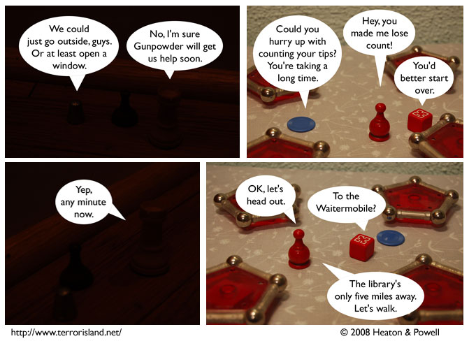

Strip #289
— Wednesday, April 16, 2008
By that he means crabwalk.
Notes, Thoughts, &c.
Ben’s Notes
From our writing session for this strip:
Lewis: Jame: “Actually, you’d be a better waiter if you were [synonym for hurrying]”Ben: What if there are a bunch of people from Russia there?
Lewis: stop that thought right there
Lewis: i will kill you
Lewis is pretty good at warding off puns before they can get into the comic.
Lewis’s Notes
You’re welcome.